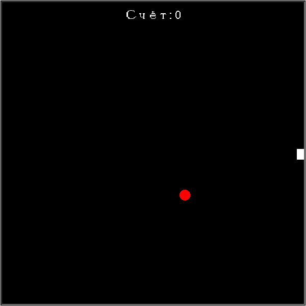

Глава 19 · Проект: «Змейка»
Проверка столкновений
Игра заканчивается при столкновении со стеной или с собственным хвостом.
Игра заканчивается при одном из двух столкновений: со стеной поля или с собственным телом.
stolknoveniya.py
def proverit_stolknoveniya():
global igra_okonchena
# столкновение со стеной
if abs(golova.xcor()) > GRANICA or abs(golova.ycor()) > GRANICA:
igra_okonchena = True
# столкновение с собственным телом
for segment in segmenty:
if segment.distance(golova) < RAZMER_SHAGA / 2:
igra_okonchena = Trueabs() снова экономит код
abs(golova.xcor()) > GRANICA проверяет сразу обе стены (левую и правую) одним сравнением — вместо golova.xcor() > GRANICA or golova.xcor() < -GRANICA. Сама встроенная функция abs() знакома по разделу 5.4 — здесь она впервые работает не как «модуль числа», а как способ сравнить расстояние до границы независимо от знака координаты.
★★ Самостоятельная задача
Ускорение игры
Увеличивайте скорость движения (уменьшайте задержку между шагами) на каждые 50 очков — игра станет постепенно сложнее.
Практика: столкновения
Модуль turtle открывает нативное окно Python — выполните локально в VS Code, PyCharm или Jupyter
Практика выполняется локально